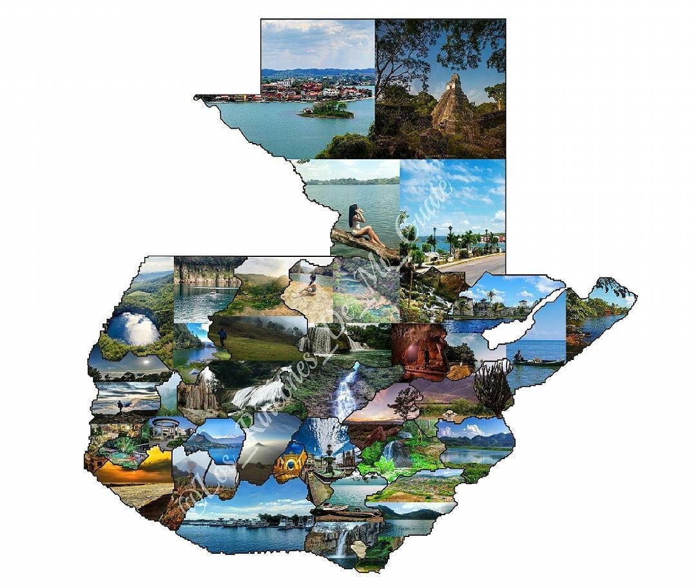

Bienvenido a SitiosGT
Descubre los mejores lugares de Guatemala
Guatemala es un país lleno de historia, cultura y belleza natural. Aquí encontrarás información sobre algunos de los destinos más impresionantes. Explora nuestras secciones para conocer más sobre cada departamento y sus atracciones. Ya sea que busques aventura, cultura o relajación, Guatemala tiene algo para todos.
¿Qué te gustaría visitar? Haz clic en el menú para navegar.

×